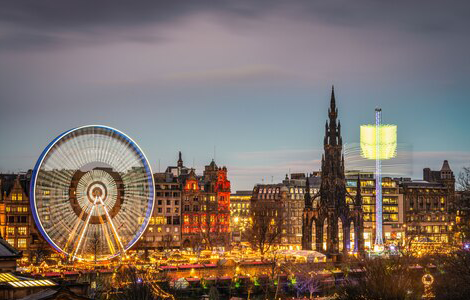
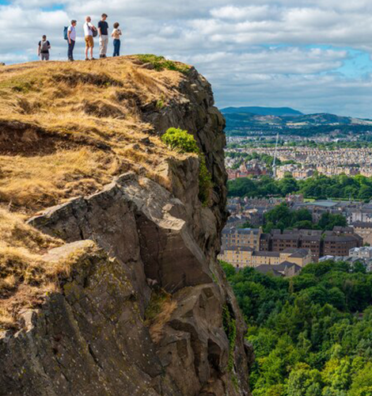

NATIONAL GEOGRAPHIC
A family city guide to Edinburgh
TRAVEL
- 
- 
Edinburgh is like a scene from a storybook, its spiky turrets, soaring towers, grand squares and cobbled streets every inch the sort of places dragons and princesses would inhabit not to mention, of course, one particularly famous boy wizard. The city was J K Rowling’s home while she wrote most of the Harry Potter books, and it’s not hard to see the spark of inspiration for her world of magic. Kids’ imaginations have been known to run away with them as they wander the higgledy piggledy medieval streets of the Old Town up to Edinburgh Castle or march through regal Holyrood Park to the extinct volcano hilltop of Arthur’s Seat, which towers above elegant Georgian streets in the east of the city centre.
The Scottish capital also has some of Britain’s finest family-friendly museums tucked away in its ancient core, along with a superb selection of restaurants serving up tasty treats from Scotland’s jam-packed larder. With a compact, walkable centre and some of the friendliest, funniest people you’ll ever meet, Edinburgh is an enjoyable family city break destination whatever the weather. Here’s how to get the best out of it.
What to do in Edinburgh with kids
Toddlers: Even little legs can manage a stroll along the city’s showstopping Royal Mile, where a jumble of kirks (churches), cathedrals and medieval closes (alleyways) jostle for attention with seemingly endless shops selling all manner of kid-enticing trinkets and curios including plenty of fudge.
The Royal Mile runs from the Palace of Holyroodhouse, the King’s official residence in Scotland, to Edinburgh Castle. From here, you can loop around to Princes Street Gardens so the kids can blow off steam on the grassy slopes of what was once a loch. At Christmas time, the gardens really come alive, with a family funfair, carol concerts, a Christmas market and Scotland’s largest Ferris wheel. It’s best after dark, when all is illuminated with twinkly lights and there’s mulled wine and hot chocolate on tap to keep families toasty.
On rainy days, wee ones can head indoors to explore the Imagine gallery at the National Museum of Scotland. Aimed at under-fives, it’s a riot of colour, complete with a story corner, dressing-up gear and interactive elements.
Children under 10: Edinburgh was the first city in the world to open a museum dedicated to the history of childhood. The Museum of Childhood first opened to the public in 1955 and moved to its present location on the Royal Mile in 1957. Its collection spans the 18th to the 21st centuries and there are hundreds of toys on display, from Muffin the Mule to Buzz Lightyear. Kids can dress up, play games and connect with parents over their own childhood memories.
Near Holyrood, science centre Dynamic Earth is the sort of museum the kids will talk about for years to come thanks to its real iceberg, which visitors can touch, and 360-degree planetarium. In the run-up to Christmas, there’s the chance to meet Santa here, too.
Stop by the Werkstatt to watch renowned woodworkers and glassblowers from Germany at work. Kids can try their own crafts in the Kinderecke, while exhibits in the Kulturecke explore Indiana’s German-American history: The state was a major hub for German immigration in the 19th century. Notable Indianans of German descent include the writer Kurt Vonnegut.
Kids who prefer the outdoors can hit the beach Edinburgh’s best is Portobello, with two miles of soft sand, plenty of arcades and abundant ice cream. Families can swim here year-round, in calm Firth of Forth waters on hot days or indoors at the Portobello Swim Centre on chillier days. The latter, a Victorian-designed leisure complex, is home to a rare example of 19th-century Turkish baths parents can draw straws for some me-time in this over-18s area while the kids splash about in the main pool.
Tweens and teenagers: For active older kids, the high point of any trip to Edinburgh is sure to be the climb up Arthur’s Seat. It takes an hour or so to reach the summit of this extinct volcano (and you’ll need sturdy shoes), but it’s worth the exertion for the view, which stretches across the city and out to the famous Forth Bridges. As an added bonus, there’s often a bagpiper providing the soundtrack to the climb, too.
Back in the Old Town, close to the castle, tech-savvy teens can explore photo opportunities at Camera Obscura and World of Illusions. As well as the opportunity to learn about the magic of early photography, this popular attraction features a magic room with giant plasma ball and dozens of hands-on optical tricks, including the chance to shake hands with your ghost or walk on water, plus a mirror maze and spinning vortex tunnel. There’s also a rooftop terrace with castle views and telescopes.
Where to eat in Edinburgh with kids
Toddlers: A Pinch of Salt's converted police box on Princes Street is the ideal pitstop for coffee and cake with high-energy kids that don’t want to sit down. For something more substantial, the National Museum of Scotland’s ground-floor Museum Kitchen should tempt little ones with its tomato-red bench seating and crowd-pleasing menu of toasties and pizzas. Near the Meadows, and opposite one of Edinburgh’s best playgrounds, MF Coffee Shop has toys to keep young kids entertained while grown-ups fuel up on locally baked goods.
Children under 10: Around the corner from the Museum of Childhood, housed in what was once the advertising and notices department of The Scotsman newspaper offices, Grand Cafe is a gorgeous setting for afternoon tea and serves a kiddie version for under a tenner; adults, meanwhile, can opt to upgrade their own afternoon tea with champagne or a gin and tonic. Nearby, City Restaurant is perfect for penning the kids into a booth and filling them up with fish and chips or macaroni cheese. If you’re down at Portobello, don’t miss The Beach House for cream-topped sundaes.
Tweens and teenagers: Take adventurous eaters to the Mussel Inn and let them loose on a pot of Scotland’s finest rope-grown mussels. Determined to get kids excited about Scottish seafood, this family-friendly bistro will do any dish child sized, from scallops to shellfish pasta. Near the National Museum of Scotland, Mums has many variations of sausage and mash on its menu, plus haggis for those who’d like to introduce their kids to a Scottish classic. Or try Howies, at the foot of Calton Hill, which serves a Scotland-sourced kids’ menu featuring Highland venison, Shetland mussels and Mackie’s ice-cream.
Comments :
- john Very good
- john Very good
Leave a Reply
Your email address will not be published. Required fields are marked*
Related posts:
-
 This wild African cat has adapted to life in a big city surprisingly well
This wild African cat has adapted to life in a big city surprisingly wellCAPE TOWN, SOUTH AFRICA The caracal sat on the trail ahead of us, appearing calm as it watched our group of three hikers huff up the lower mountain slope on a warm October evening.
View article -
 Morocco has 3 million stray dogs. Meet the people trying to help them.
Morocco has 3 million stray dogs. Meet the people trying to help them.TANGIER, MOROCCOIt’s still dark when Salima Kadaoui begins her day. In these predawn hours, when the oppressive Moroccan heat is held at bay by a thin blanket of haze and most of the city is still asleep, free-ranging dogs
View article -
 Do Canada geese still fly south for winter Yes, but it's complicated
Do Canada geese still fly south for winter Yes, but it's complicatedMigrating Canada geese, in their iconic v-formations, can fly an astonishing 1,500 miles in just 24 hours. They can also waddle indefinitely around your local office park.
View article